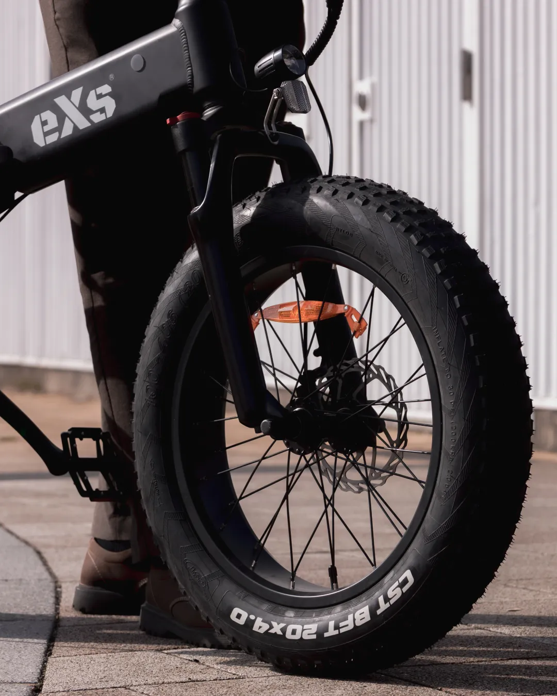
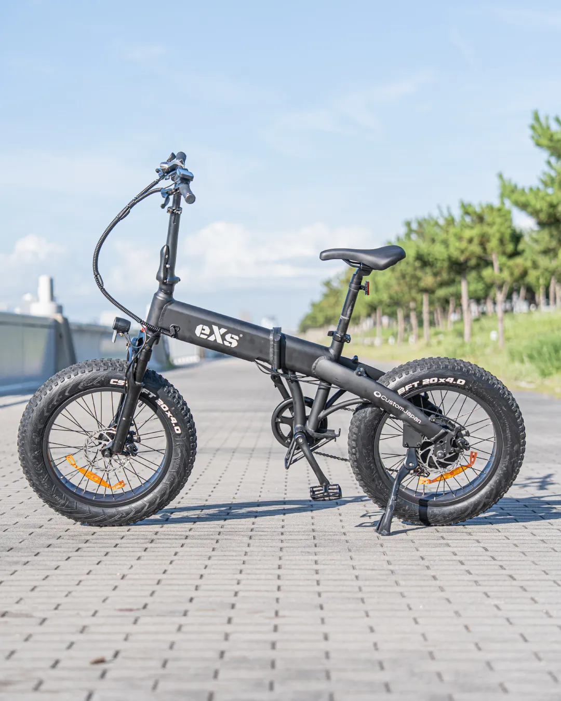
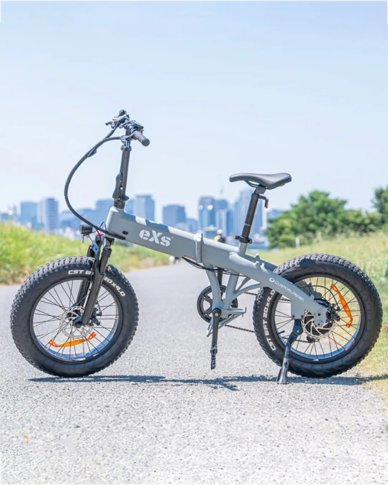
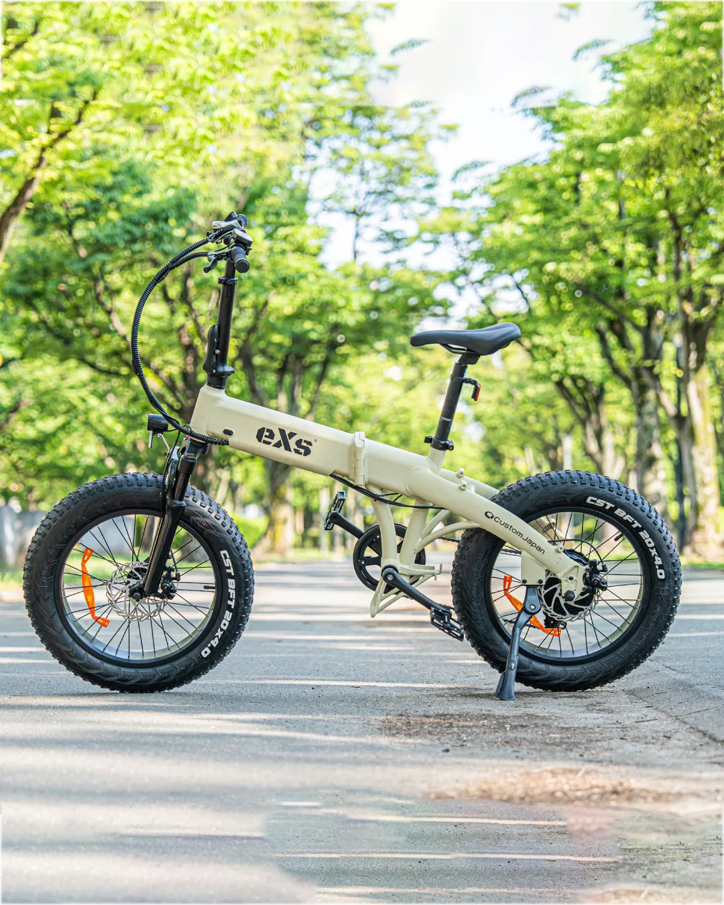
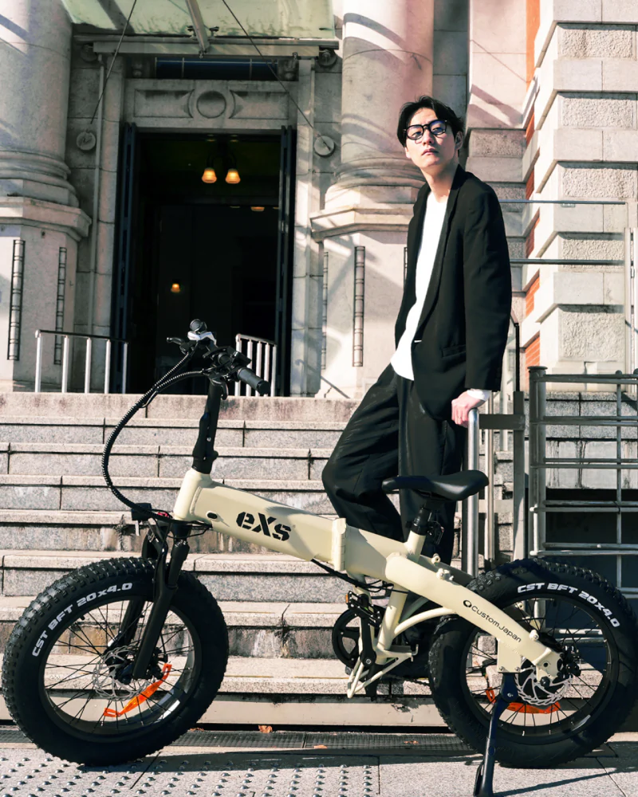

48V 10Ahの高性能バッテリー
フレームにすっきりと内蔵された48V・10Ahバッテリーは、スタイルを損なわずに最長約80kmの走行性能を発揮します。
THE URBAN ADVENTURE
CONCEPT
街乗りも、オフロードも。
移動の常識を再定義する、
かつてない走破性とスタイル。

4インチ幅の極太タイヤが路面の凹凸を吸収。段差の多い市街地から、砂利道などのラフな路面まで、あらゆるシーンで安定した走行を実現します。



過度な装飾を削ぎ落としたミニマルなフレームデザイン。光の反射を抑えたマット塗装は、スーツスタイルにもカジュアルな装いにも調和します。

フレームにすっきりと内蔵された48V・10Ahバッテリーは、スタイルを損なわずに最長約80kmの走行性能を発揮します。

フレームの世界観を壊さず、静かに機能美を引き立てるカラー液晶。アシストレベル・速度・バッテリー残量をひと目で把握できます。

スリーステップで折りたたみ可能。自宅や車のトランクにも収まり、ファットタイヤモデルながら高い収納性を備えています。

サドルを抜けばすぐ空気を入れられる便利機構を搭載。出先やオフロードでも安心の実用性を備えています。
3ステップでコンパクトに変形。週末は車のトランクに積んでキャンプへ。平日はオフィスのデスク下に。移動の自由度を劇的に広げます。
高性能なパーツが、快適な走りを支える。
視認性の高いLCD
バックライト液晶
大容量 10.4Ah
最大80km走行可能
Shimano製
7段変速ギア
前後ディスクブレーキ
強力な制動力

BRAND PARTNER
eXs Street / eXs 1 TKG を取り扱う正規販売店をご紹介。試乗や在庫確認、導入相談はお近くの取扱店へお問い合わせください。
取扱店一覧を見る →